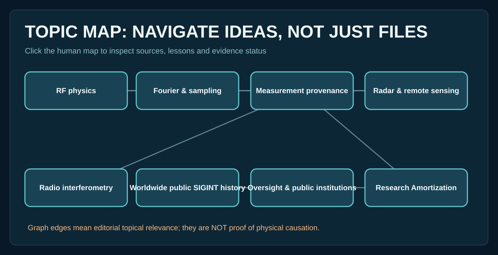

Topic map
Each card links concepts to source records and teaching lessons. Connections are editorial navigation—not established causality.

Choose a topic to see its sources, lessons and connections.
Each card links concepts to source records and teaching lessons. Connections are editorial navigation—not established causality.

Choose a topic to see its sources, lessons and connections.